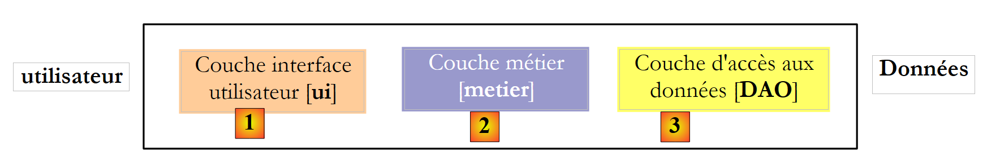
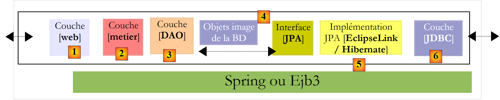

2. Architecture d'une application Java en couches
Une application java est souvent découpée en couches chacune ayant un rôle bien défini. Considérons une architecture courante, celle à trois couches :
 |
- la couche [1], appelée ici [ui] (User Interface) est la couche qui dialogue avec l'utilisateur, via une interface graphique Swing, une interface console ou une interface web. Elle a pour rôle de fournir des données provenant de l'utilisateur à la couche [2] ou bien de présenter à l'utilisateur des données fournies par la couche [2].
- la couche [2], appelée ici [metier] est la couche qui applique les règles dites métier, c.a.d. la logique spécifique de l'application, sans se préoccuper de savoir d'où viennent les données qu'on lui donne, ni où vont les résultats qu'elle produit.
- la couche [3], appelée ici [DAO] (Data Access Object) est la couche qui fournit à la couche [2] des données pré-enregistrées (fichiers, bases de données, ...) et qui enregistre certains des résultats fournis par la couche [2].
Il existe différentes possibilités pour implémenter la couche [DAO]. Examinons-en quelques-unes :
 |
La couche [JDBC] ci-dessus est la couche standard utilisée en Java pour accéder à des bases de données. Elle isole la couche [DAO] du SGBD qui gère la base de données. On peut théoriquement changer de SGBD sans changer le code de la couche [DAO]. Malgré cet avantage, l'API JDBC présente certains inconvénients :
- toutes les opérations sur le SGBD sont susceptibles de lancer l'exception contrôlée (checked) SQLException. Ceci oblige le code appelant (la couche [DAO] ici) à les entourer par des try / catch rendant ainsi le code assez lourd.
- la couche [DAO] n'est pas complètement insensible au SGBD. Ceux-ci ont par exemple des méthodes propriétaires quant à la génération automatique de valeurs de clés primaires que la couche [DAO] ne peut ignorer. Ainsi lors de l'insertion d'un enregistrement :
- avec Oracle, la couche [DAO] doit d'abord obtenir une valeur pour la clé primaire de l'enregistrement puis insérer celui-ci.
- avec SQL Server, la couche [DAO] insère l'enregistrement qui se voit donner automatiquement une valeur de clé primaire par le SGBD, valeur rendue à la couche [DAO].
Ces différences peuvent être gommées via l'utilisation de procédures stockées. Dans l'exemple précédent, la couche [DAO] appellera une procédure stockée dans Oracle ou SQL Server qui prendra en compte les particularités du SGBD. Celles-ci seront cachées à la couche [DAO]. Néanmoins, si changer de SGBD n'impliquera pas de réécrire la couche [DAO], cela implique quand même de réécrire les procédures stockées. Cela peut ne pas être considéré comme rédhibitoire.
De multiples efforts ont été faits pour isoler la couche [DAO] des aspects propriétaires des SGBD. Une solution qui a eu un vrai succès dans ce domaine ces dernières années, est celle d'Hibernate :
 |
La couche [Hibernate] vient se placer entre la couche [DAO] écrite par le développeur et la couche [JDBC]. Hibernate est un ORM (Object Relational Mapper), un outil qui fait le pont entre le monde relationnel des bases de données et celui des objets manipulés par Java. Le développeur de la couche [DAO] ne voit plus la couche [JDBC] ni les tables de la base de données dont il veut exploiter le contenu. Il ne voit que l'image objet de la base de données, image objet fournie par la couche [Hibernate]. Le pont entre les tables de la base de données et les objets manipulés par la couche [DAO] est fait principalement de deux façons :
- par des fichiers de configuration de type XML
- par des annotations Java dans le code, technique disponible seulement depuis le JDK 1.5
La couche [Hibernate] est une couche d'abstraction qui se veut la plus transparente possible. L'idéal visé est que le développeur de la couche [DAO] puisse ignorer totalement qu'il travaille avec une base de données. C'est envisageable si ce n'est pas lui qui écrit la configuration qui fait le pont entre le monde relationnel et le monde objet. La configuration de ce pont est assez délicate et nécessite une certaine habitude.
La couche [4] des objets, image de la BD est appelée "contexte de persistance". Une couche [DAO] s'appuyant sur Hibernate fait des actions de persistance (CRUD, create - read - update - delete) sur les objets du contexte de persistance, actions traduites par Hibernate en ordres SQL exécutés par la couche JDBC. Pour les actions d'interrogation de la base (le SQL Select), Hibernate fournit au développeur, un langage HQL (Hibernate Query Language) pour interroger le contexte de persistance [4] et non la BD elle-même.
Hibernate est populaire mais complexe à maîtriser. La courbe d'apprentissage souvent présentée comme facile est en fait assez raide. Dès qu'on a une base de données avec des tables ayant des relations un-à-plusieurs ou plusieurs-à-plusieurs, la configuration du pont relationnel / objets n'est pas à la portée du premier débutant venu. Des erreurs de configuration peuvent conduire à des applications peu performantes.
Devant le succès des produits ORM, Sun le créateur de Java, a décidé de standardiser une couche ORM via une spécification appelée JPA (Java Persistence API) apparue en même temps que Java 5. La spécification JPA a été implémentée par divers produits : Hibernate, Toplink, EclipseLink, OpenJpa, .... Avec JPA, l'architecture précédente devient la suivante :
 |
La couche [DAO] dialogue maintenant avec la spécification JPA, un ensemble d'interfaces. Le développeur y a gagné en standardisation. Avant, s'il changeait sa couche ORM, il devait également changer sa couche [DAO] qui avait été écrite pour dialoguer avec un ORM spécifique. Maintenant, il va écrire une couche [DAO] qui va dialoguer avec une couche JPA. Quelque soit le produit qui implémente celle-ci, l'interface de la couche JPA présentée à la couche [DAO] reste la même.
Dans ce document, nous utiliserons une couche [DAO] s'appuyant sur une couche JPA/Hibernate ou JPA/EclipseLink. Par ailleurs nous utiliserons le framework Spring 2.8 pour lier ces couches entre-elles.
 |
Le grand intérêt de Spring est qu'il permet de lier les couches par configuration et non dans le code. Ainsi si l'implémentation JPA / Hibernate doit être remplacée par une implémentation Hibernate sans JPA, parce que par exemple l'application s'exécute dans un environnement JDK 1.4 qui ne supporte pas JPA, ce changement d'implémentation de la couche [DAO] n'a pas d'impact sur le code de la couche [métier]. Seul le fichier de configuration Spring qui lie les couches entre elles doit être modifié.
Avec Java EE 5, une autre solution existe : implémenter les couches [metier] et [DAO] avec des EJB3 (Enterprise Java Bean version 3) :
 |
Nous verrons que cette solution n'est pas très différente de celle utilisant Spring. L'environnement Java EE5 est disponible au sein de serveurs dits serveurs d'applications tels que Sun Application Server 9.x (Glassfish), Jboss Application Server, Oracle Container for Java (OC4J), ... Un serveur d'applications est essentiellement un serveur d'applications web. Il existe également des environnements EE 5 dits "stand-alone", c.a.d. pouvant être utilisés en-dehors d'un serveur d'applications. C'est le cas de JBoss EJB3 ou OpenEJB.
Dans un environnement EE5, les couches sont implémentées par des objets appelés EJB (Enterprise Java Bean). Dans les précédentes versions d'EE, les EJB (EJB 2.x) étaient réputés difficiles à mettre en oeuvre, à tester et parfois peu-performants. On distingue les EJB2.x "entity" et les EJB2.x "session". Pour faire court, un EJB2.x "entity" est l'image d'une ligne de table de base de données et EJB2.x "session" un objet utilisé pour implémenter les couches [metier], [DAO] d'une architecture multi-couches. L'un des principaux reproches faits aux couches implémentées avec des EJB est qu'elles ne sont utilisables qu'au sein de conteneurs EJB, un service délivré par l'environnement EE. Cet environnement, plus complexe à mettre en oeuvre qu'un environnement SE (Standard Edition), peut décourager le développeur à faire fréquemment des tests. Néanmoins, il existe des environnements de développement Java qui facilitent l'utilisation d'un serveur d'application en automatisant le déploiement des EJB sur le serveur : Eclipse, Netbeans, JDeveloper, IntelliJ IDEA. Nous utiliserons ici Netbeans 6.8 et le serveur d'application Glassfish v3.
Le framework Spring est né en réaction à la complexité des EJB2. Spring fournit dans un environnement SE un nombre important des services habituellement fournis par les environnements EE. Ainsi dans la partie "Persistance de données", Spring fournit les pools de connexion et les gestionnaires de transactions dont ont besoin les applications. L'émergence de Spring a favorisé la culture des tests unitaires, devenus plus faciles à mettre en oeuvre dans le contexte SE que dans le contexte EE. Spring permet l'implémentation des couches d'une application par des objets Java classiques (POJO, Plain Old/Ordinary Java Object), permettant la réutilisation de ceux-ci dans un autre contexte. Enfin, il intègre de nombreux outils tiers de façon assez transparente, notamment des outils de persistance tels que Hibernate, EclipseLink, Ibatis, ...
Java EE5 a été conçu pour corriger les lacunes de la spécification EJB2. Les EJB 2.x sont devenus les EJB3. Ceux-ci sont des POJOs tagués par des annotations qui en font des objets particuliers lorsqu'ils sont au sein d'un conteneur EJB3. Dans celui-ci, l'EJB3 va pouvoir bénéficier des services du conteneur (pool de connexions, gestionnaire de transactions, ...). En-dehors du conteneur EJB3, l'EJB3 devient un objet Java normal. Ses annotations EJB sont ignorées.
Ci-dessus, nous avons représenté Spring et un conteneur EJB3 comme infrastructure (framework) possible de notre architecture multi-couches. C'est cette infrastructure qui délivrera les services dont nous avons besoin : un pool de connexions et un gestionnaire de transactions.
- avec Spring, les couches seront implémentées avec des POJOs. Ceux-ci auront accès aux services de Spring (pool de connexions, gestionnaire de transaction) par injection de dépendances dans ces POJOs : lors de la construction de ceux-ci, Spring leur injecte des références sur les services dont il vont avoir besoin.
-
avec le conteneur EJB3, les couches seront implémentées avec des EJB. Une architecture en couches implémentées avec des EJB3 est peu différente de celles implémentées avec des POJO instanciés par Spring. Nous trouverons beaucoup de ressemblances.
-
pour terminer, nous présenterons un exemple d'application web multi-couches :
 |